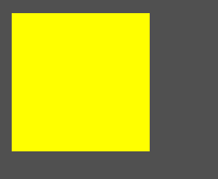
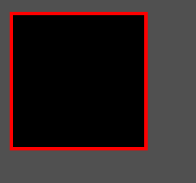
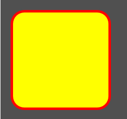
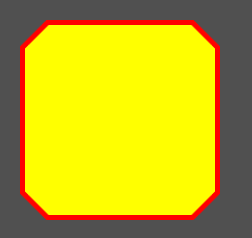
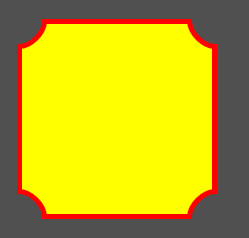
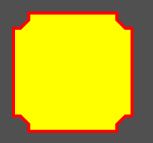
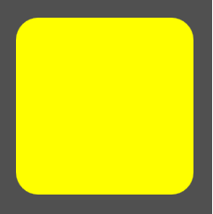
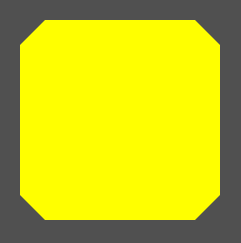
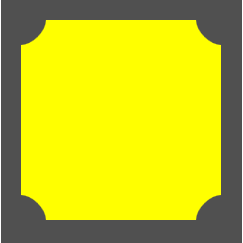
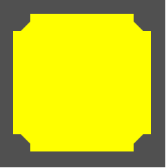

Tag rectangle
Tag RECTANGLE
A tag/componente rectangle representa um retângulo na interface o qual você pode personalizar cores, bordas e outros aspectos da forma.
Herança
O rectangle possui todas as características de um controle shape/forma.
Veja
Características
Além das características herdadas, o rectangle possui também as seguintes características:
Propriedades e atributos
| Propriedade | Tipo | Valor Padrão | Descrição |
|---|---|---|---|
| corners | Conjunto de: "topLeft" "topRight" "bottomLeft" "bottomRight" | "topLeft topRight bottomLeft bottomRight" | Identifica quais quinas do controle serão customizadas pela propriedade "cornerType" Exemplos: Apenas as duas quinas superiores: "topLeft topRight" Apenas as duas quinas da esquerda: "topLeft bottomLeft" Todas as quinas: "topLeft topRight bottomLeft bottomRight" Nenhuma quina: "" |
| cornerType | Enumerado: "round" "bevel" "innerRound" "innerLine" | "round" | Especifica o tipo de formato que as quinas deste retângulo terão. Você deve especificar valores das propriedades "xradius" e "yradius" para o formato das quinas serem visíveis. Veja o Exemplo 3 para mais detalhes. |
| sides | Conjunto de: "top" "left" "bottom" "right" | "top left bottom right" | Define quais bordas serão desenhadas na interface. Exemplos: Apenas a borda superior: "top" Apenas as bordas laterais: "left right" Todas as bordas: "top left bottom right" Nenhuma borda: "" |
| xradius | Float | 0.0 | Define a "largura" do efeito das quinas (propriedade "cornerType"" Veja o Exemplo 3 para mais detalhes. |
| yradius | Float | 0.0 | Define a "altura" do efeito das quinas (propriedade "cornerType"" Veja o Exemplo 3 para mais detalhes. |
Exemplos
Exemplo 1 - Retângulo simples
| \<?xml version="1.0" encoding="UTF-8"?> \<form name="frmFichaTeste"> \<rectangle left="20" top="20" width="200" height="200" color="yellow"/> \</form> |
|---|

Exemplo 2 - Retângulo com bordas simples
| \<?xml version="1.0" encoding="UTF-8"?> \<form name="frmFichaTeste"> \<rectangle left="20" top="20" width="200" height="200" color="black" strokeColor="red" strokeSize="5"/> \</form> |
|---|

Exemplo 3 - Retângulo com quinas variadas
| \<?xml version="1.0" encoding="UTF-8"?> \<form name="frmFichaTeste"> \<rectangle left="20" top="20" width="200" height="200" color="yellow" strokeColor="red" strokeSize="5" xradius="25" yradius="25" cornerType="round"/> \</form> |
|---|
|  cornerType="round" |  cornerType="bevel" |
|---|---|
|  cornerType="innerRound" |  cornerType="innerLine" |
Exemplo 4 - Retângulo com quinas variadas e sem bordas
| \<?xml version="1.0" encoding="UTF-8"?> \<form name="frmFichaTeste"> \<rectangle left="20" top="20" width="200" height="200" color="yellow" xradius="25" yradius="25" cornerType="round"/> \</form> |
|---|
|  cornerType="round" |  cornerType="bevel" |
|---|---|
|  cornerType="innerRound" |  cornerType="innerLine" |
Created with the Personal Edition of HelpNDoc: Create HTML Help, DOC, PDF and print manuals from 1 single source